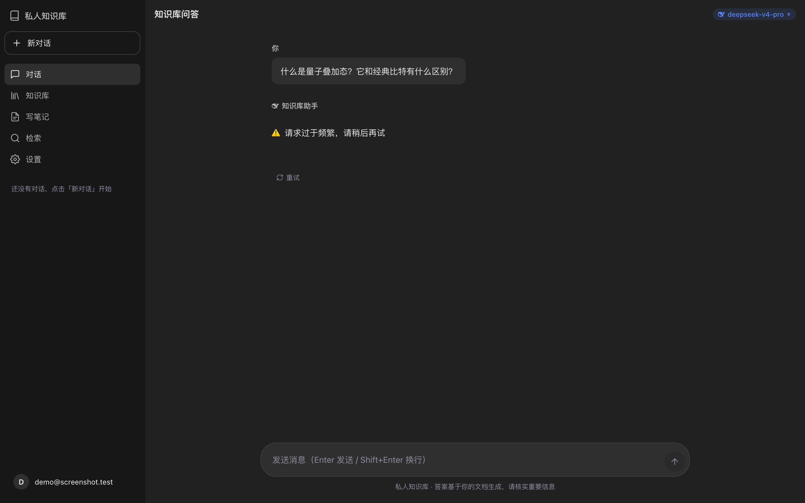
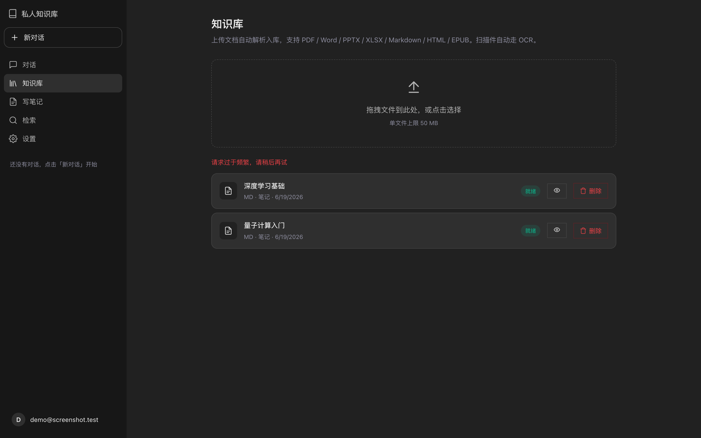
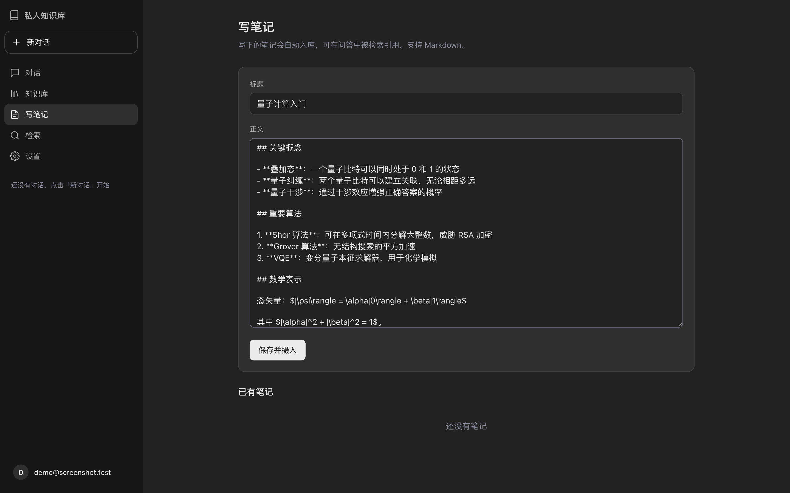
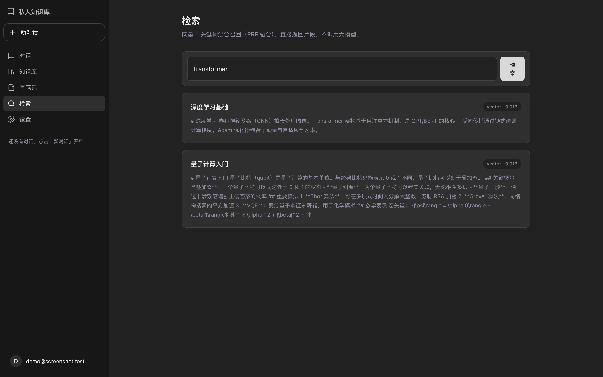
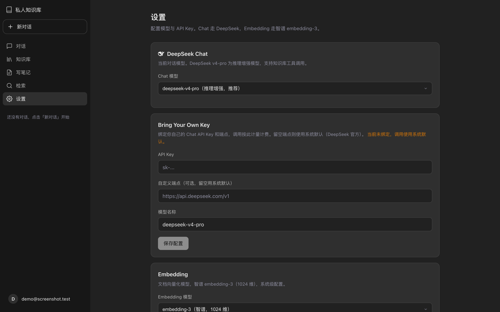
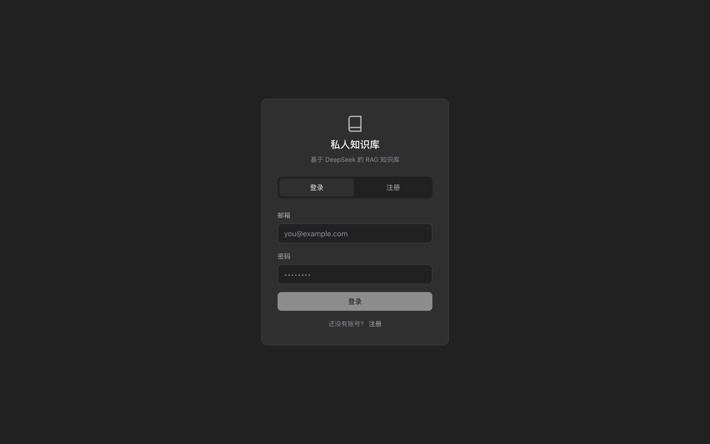

上传文档，写下笔记，用自然语言提问。
答案带引用来源，每一次回答都有据可查。

从文档上传到智能问答，每一个环节都精心打磨。
支持 PDF、Word、PPT、Excel、Markdown、HTML、EPUB。扫描件自动走 OCR，提取的文本精准入库。

写下笔记，自动摄入知识库。支持 Markdown 编辑，随时修改重新索引。你写下的每一个字都可被检索。

基于 DeepSeek v4-pro 推理模型 + 向量检索 + 关键词混合召回。每个答案都标注来源文档，点击即可查看原文。流式渲染，逐字呈现，如同 ChatGPT 般丝滑。
向量语义检索 + 关键词精确匹配，RRF 融合排序。找内容，又快又准。

一键切换模型，绑定自己的 API Key。上下文用量可视化，自动压缩长对话。

助手拥有工具调用能力，能根据你的问题自动选择最佳检索策略。
助手不只是简单检索。它能根据问题意图，自动调用知识库检索、关键词搜索、文档列表、创建笔记等工具。你说「帮我记下这个公式」，它就自动创建笔记并入库。
完整对话历史自动管理。接近窗口上限时自动压缩，保留关键信息。多轮对话无缝衔接。
每个用户的知识库完全独立。你的文档只有你能看到。安全、私密、可靠。
现代技术栈，每一层都经过压力测试。
推理增强模型
1M 上下文窗口
1024 维向量
中文场景优化
pgvector + pg_trgm
向量+全文混合检索
高并发后端
流式渲染前端
异步摄入处理
ACK 可靠投递
多租户隔离
限流 + 重试 + 容灾
注册账号，上传第一份文档，30 秒内开始提问。
